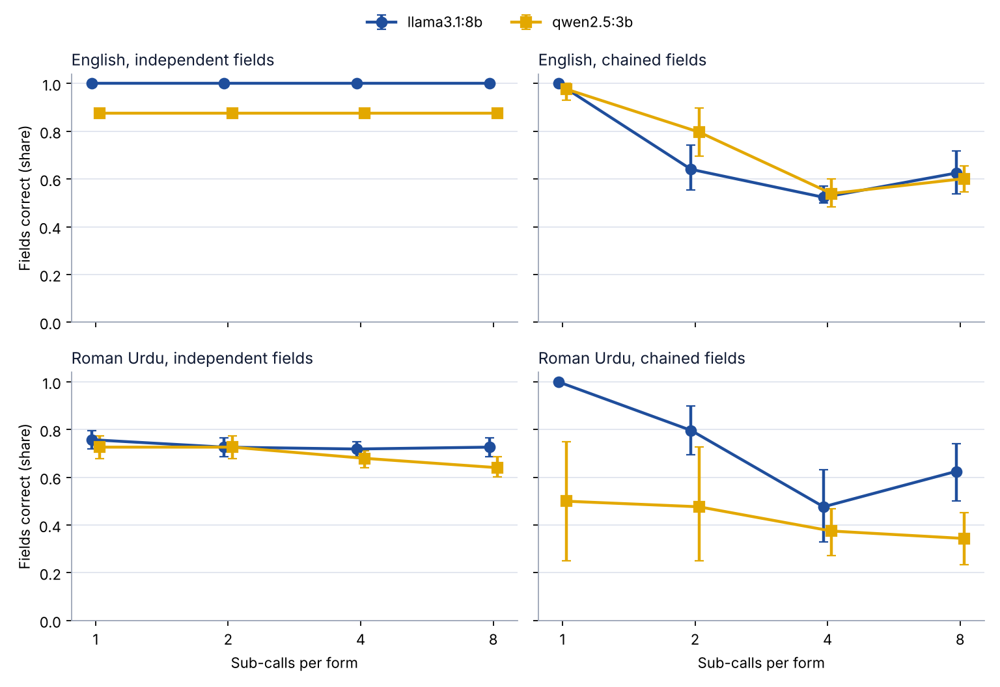

Experiment · Agentic AI · Task decomposition
Splitting a billing form into smaller AI calls cut accuracy from 100% to about 60%, because 'fee' lost its meaning
ADGB: how finely should an agent split a task before handing out the pieces?
By Muzammal Hussain · 12 November 2026 · Research update
A common agent design breaks a job into small sub-tasks and gives each one to a separate model call. I tested whether that helps small local models fill an 8-field clinic form. Each form was filled in 1, 2, 4 or 8 calls, by llama3.1:8b and qwen2.5:3b, from notes in English and in Roman Urdu: 512 forms and 1,920 calls on a MacBook. All the patients and notes are invented.
Key findings
- Independent fields did not care: for English notes, splitting extraction fields such as age, side and pain score changed nothing for either model.
- Chained fields broke: on billing forms where later amounts depend on earlier ones, llama3.1:8b fell from 100% of fields correct in one call to between 52% and 64% when the form was split.
- One word did most of the damage: 35 of llama's 36 wrong English fee values in split forms were the fee after the discount. Asked in one call next to the gross fee and discount fields, it never made that mistake.
- Splitting cost time: for llama3.1:8b, eight calls took about three times as long as one when run one after another.
Setup
There were two kinds of form. Independent forms asked for eight facts that can each be read straight from the note: age, side, joint, pain score, sessions per week, weeks, fee per session and the next review day. Chained forms were billing forms: sessions per week and weeks, then total sessions, fee per session, gross fee, discount percent, discount amount and the amount payable, where each computed value uses earlier ones. Every note also contained distractors, such as a relative's age or a closed earlier course.
The fields were split into equal consecutive groups, one model call per group, and code merged the answers. In chained forms each call received the values produced by earlier calls exactly as produced, so an early mistake could travel. Models ran at temperature 0 with JSON output. There were 16 forms of each kind per model and language, and differences against one call are paired on the same forms with bootstrap 95% intervals.
Results

| Model | Note | Fields | 1 call | 2 calls | 4 calls | 8 calls |
|---|---|---|---|---|---|---|
| llama3.1:8b | English | independent | 100% | 100% | 100% | 100% |
| llama3.1:8b | English | chained | 100% | 64.1% | 52.3% | 62.5% |
| llama3.1:8b | Roman Urdu | independent | 75.8% | 72.7% | 71.9% | 72.7% |
| llama3.1:8b | Roman Urdu | chained | 100% | 79.7% | 47.7% | 62.5% |
| qwen2.5:3b | English | independent | 87.5% | 87.5% | 87.5% | 87.5% |
| qwen2.5:3b | English | chained | 97.7% | 79.7% | 53.9% | 60.2% |
| qwen2.5:3b | Roman Urdu | independent | 72.7% | 72.7% | 68.0% | 64.1% |
| qwen2.5:3b | Roman Urdu | chained | 50.0% | 47.7% | 37.5% | 34.4% |
Share of the eight fields correct, 16 forms per cell. For English chained forms every drop against one call had a 95% interval below zero, for both models.
Why the split billing forms failed
The fee field asked for "fee per session in rupees in the current course". When it appeared alone or with the session counts, llama3.1:8b often applied the discount first: 450 instead of 500 for a 10% discount, 1,600 instead of 2,000 for 20%. That single wrong value then flowed into the gross fee, the discount and the amount payable. When the same model filled the whole form in one call, the gross-fee and discount fields sat next to the fee, and it read the fee correctly every time. The description never said "before discount", so the result is part model behaviour and part an underspecified field, which is exactly the situation a sub-task loses its context in.
Two smaller points
Roman Urdu notes were harder to read at any split: in one call the models named the wrong joint (often "knee" for a hip or ankle), swapped the side, or left the review day untranslated, such as "mangal" for Tuesday. And qwen2.5:3b's 87.5% ceiling on English independent forms came entirely from the weekday field: it wrote "tue" where the prompt asked for a full English weekday, which the scorer counts as wrong.
What this means
Splitting is safe when the pieces really are independent, and costly when one piece needs the others to know what it means. Before splitting, check whether each sub-task's instructions still define every term without the rest of the form. Where they do not, either keep the fields together or write the definitions out in full. The next run tests that directly, with the fee described as "before any discount".
Limitations
The forms were written from templates and invented, 16 per cell, so intervals are wide. Two small models on one Mac are not a general result. The fee explanation comes from looking at the errors; it has not yet been tested by changing the field description. Parallel time was worked out from the sequential run, not measured.
Models: Llama 3.1 8B and Qwen2.5 3B, run locally with Ollama. All patients and clinic notes are invented.